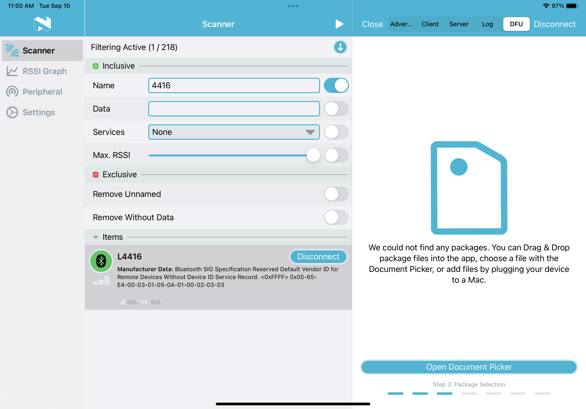
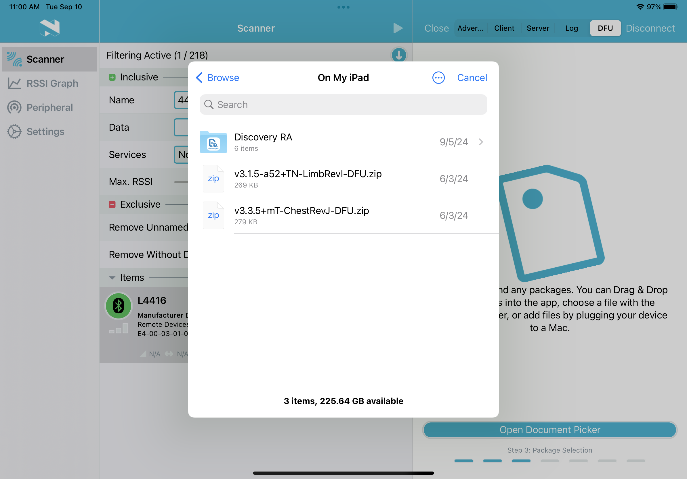
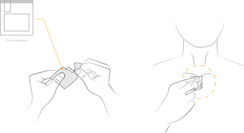
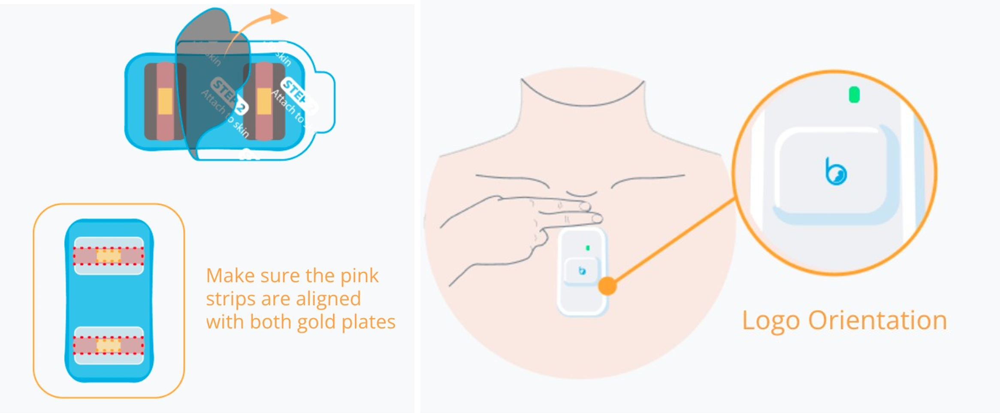
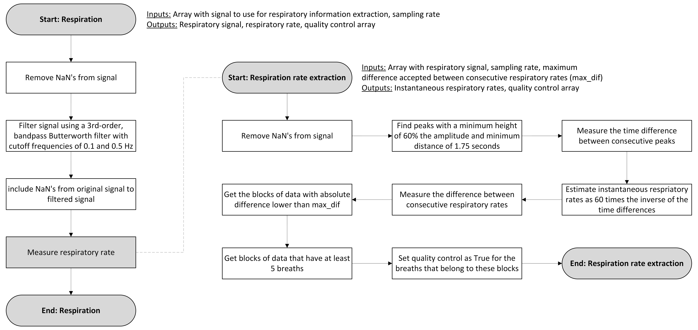

What is the Anne®?#
The Anne® is a system of synced devices created by Sibel Health, Inc. This system is comprised of two independent wearable devices, which are adhered to the chest and a finger, respectively.
The chest device (Anne® Chest Sensor) is a clinical-grade monitoring device that measures the electrical activity of the heart, also known as the electrocardiogram (ECG); the skin temperature; and motion activity using a triaxial accelerometer and gyroscope. From this data, it is possible to extract cardiovascular, temperature and movement features.

The device located on the finger (Anne® Limb Sensor) is also a clinical-grade monitoring device which measures photoplethysmography (PPG), an optically-derived signal which varies with blood volume changes, and skin temperature. It is possible to obtain valuable temperature features and cardiovascular information, such as pulse rate and oxygen saturation (SpO2), from this device.

Both devices feature battery life above 36 hours, which make them ideal for longer term monitoring without compromising signal quality. Moreover, they are internally synchronized, which implies that time-based metrics that require signals to be acquired precisely at the same instant can be reliably extracted from this system.
For more details on the specifics of each device, visit the manufacturer website.
In addition to the devices, Sibel Health, Inc provides a mobile application that can be used to configure, monitor and download data from both chest and limb sensors. This application, called DiscoveryRA can be used with any compatible iOS device and provides several functions to interact with the devices, including checking their battery; connecting different sensors; streaming data; and starting and stopping recordings.
How is data collected?#
Sensor setup#
Both the chest and limb sensors need to be prepared before being deployed to the field, where the data is collected. To do this, follow these instructions:
- Clean both sides of the Chest and Limb sensors and the charger with a cleaning wipe:

- Connect the charger to a power supply, either using the wall adapter or a USB-C cable. Once connected and powered, the charger should have a blue light indicating that it is powered:

- Place the sensors on the charger following the outlines on the charging surface. Make sure the logos of the sensors are aligned with the logos on the charging pad:

- A green LED light on each of the sensors will blink every five seconds indicating the sensors are charging. Average duration for a full charge is 5 hours. When fully charged the green LED light will remain solid. Battery charge level can be monitored using the DiscoveryRA mobile application.

-
Whilst the sensors are being charged, verify the firmware in both devices. Update the firmware for each device if the version installed does not correspond to the last version available. To do this:
-
Save the last version of the firmware onto the device that's being used for configuring the Anne® sensors. This should be an iOS compatible device with the nRF Connect app installed.
-
Open the nRF Connect app and scan for devices. Connect to the desired Anne® sensor

- Click on "Client" on the top of the screen and scroll down to "Firmware Revision String." Click the downwards arrow. Verify the current firmware on the device.

- If the firmware needs to be updated, click on "DFU":

- Press "Open Document Picker" on the bottom of the screen and select the correct firmware for the Anne® sensor from your local files.
Note
Make sure the firmware selected matches the Anne® sensor. Limb sensors serial numbers start with L, whilst serial number for Chest sensors start with a C. Selecting the wrong firmware file may lead to complete damage of the sensor.

- Press "Start" and wait until the upload process finishes. The status will say "Your DFU update was completed successfully!" when the firmware is succesfully downloaded.

- Connect back to the device and verify that the current firmware version on the device corresponds to the newly installed firmware by selecting "Firmware Revision String." If the update was succesful, hit "Close" and disconnect from the Anne® device. Otherwise, repeat the process.
Note
The current firmware version for Chest sensors is 3.3.5+mT_RevJ. The current firmware version for Limb sensors is 3.1.5-a53+TN_RevI
The firmware version can also be checked on the DiscoveryRA app, by connecting the Anne® sensor and clicking the right arrow. In the "Settings" tab, the firmware version should be listed and correspond to the firmware uploaded using the nRF Connect app.

- Update the firmware version of the device in the Anne® device list.
Note
The RADC Anne® device list documents information specific to each Limb and Chest sensor including firmware, number of uses in field and status of the device.
-
-
Once the batteries of both devices are fully charged, the sensors need to be paired and set in "ship mode," in which battery use is minimized until the sensors are placed on the participants . To do this:
-
Log in to the DiscoveryRA app using an existing account or create one. Then, enter the project ID (ProjID) and tap "Start Session".
-
Click "Add Sensors" and select one of the sensors (either Chest or Limb) you wish to pair from the list of available sensors. The name of the sensor can be retrieved from its surface. All Chest sensor names begin with CJ, whilst the Limb sensor names begin with a L. Tap "Connect" on the pop-up window, and, if prompted, select "Pair". Repeat the process with the other sensor, until both Chest and Limb sensors are connected. In the DiscoveryRA application, this should look like the following figure:

-
Remove the sensors from the charging pad.
-
Click on the arrow next to each of the sensors. A pop-up window will show. Select "Ship Mode" in the "Settings" tab. Once the sensor is set to this mode, select "Unpair". Do the same for both sensors and then place them in the box. These sensors are ready to be used for data acquisition.
-
Device placement#
The fully charged, updated and configured sensors are ready to be placed in the field.
Note
This process should be done by a trained Research Assistant (RA) during a field visit. Record of placement is recorded on the RADC devices site, where the participant information (project ID, visit number), Limb and Chest sensor IDs, device status (placed, collected, returned), placement date, and expected retrieval date and staff can be found.
A succesful placement should follow these steps:
-
Place the sensors on the charger and verify that the green LED is on for both devices. Either solid green LED light (fully charged) or flashing green LED light (partially charged) indicate that the sensor is activated and ready to be placed in the participant.
-
Once the chest sensor is removed from the charger, all LED indicators should be off. The red LED may begin to flash as it is not yet placed on the participant. Any other solid or flashing visible LED light should be consider a warning and may indicate that the sensor has not been initialized correctly.
-
Once the limb sensor is removed from the charger, all lights should be off except for the red laser. Any other solid or flashing visible LED light should be consider a warning and may indicate that the sensor has not been initialized correctly.
-
-
In the DiscoveryRA application connect each of the sensors to the app. Once connected, click the arrow in the right, and go to the "Stream" tab. Select "Collect Data" in the bottom right corner, and select "Start" when prompted. Do this for both sensors.
-
Place the Chest sensor on the participant:
- Prep the skin at the location of the chest sensor application site using NuPrep and a q-tip and then an alcohol wipe to gently scrub away any lotion, oils, previous adhesives, dirt, loose skin, etc. Proper skin prep will improve sensor adhesion and signal quality.

-
Open the chest adhesive package and take the adhesive out of it. There are three liners covering the adhesive. One side of the adhesive is attached to the skin (covered by 1 liner) and the other is attached to the back of the Chest sensor (covered by 2 liners). To apply the adhesive on the sensor:
- Slowly peel off the blue liner labeled "Step 1."
- Apply the exposed half of the adhesive to the back of the chest sensor so that the black strip is aligned with the gold electrode.
- Slowly peel off the black liner labeled Step 2.
- Gently apply pressure to ensure good contact between the adhesives and electrodes

-
Apply the sensor on the body by peeling off the liner labeled "Step 3," and placing the Chest sensor just below the suprasternal notch (space between where the clavicles meet). The top of the sensor should align with the bottom of the clavicles.
- If the red LED flashes every second, then it has not been placed correctly on the participant.
Note
Make sure the logo orientation is as shown in the following figure. To ensure accurate chest sensor reading, gently apply pressure on the top and bottom of the sensor.

-
Place the Limb sensor on the participant:
- Apply the adhesive on the sensor. To do this, lay out the adhesive with the white liner side up and peel away the middle section of the liner; then, place the limb sensor with the blue side up onto the adhesive:

- Place the participant's finger on the sensor so that their nail is covering the bottom square window. Then, fold the top of the sensor and adhesive over the fingertip, ensuring the notch and bump align:

- Peel off the liners on the TOP strips from the adhesive and wrap both tabs around the fingertip. Finally, peel off the BOTTOM liners from the adhesive tab and wrap around the base of the finger.

-
The sensors are now placed and collecting data from the participant. LED indicators on each of the sensors are used to understand the behavior of the sensors. Here is a summary of their meaning:
| LED indicator | Status | LED pattern |
|---|---|---|
| Green | No active session | Blink every 3 seconds |
| Not fully charged | 1 second on every 5 seconds | |
| Fully charged | Solid | |
| User input | User defined | |
| Red | System faults | Solid |
| Battery low level (below 20%) | Blink every 3 seconds | |
| Low memory storage | Blink every 3 seconds | |
| Lead off during active session | Blink every 1 seconds |
Data retrieval#
After data collection, the Anne® devices are picked up by a member of the RA team, and returned to the Rush Alzheimer's Disease Center (RADC) office. RAs are instructed to leave the devices and the Device Placement Sheet at the Device Team office, and place the sensors in chargers until an engineer from the Device Team is ready to download the data from them.
Data download#
Note
During the download process the devices must be placed on a charger or have a high level of charge. It takes a significant amount of time and battery power to download the acquired data from the device.
The initial step to retrieve the data is to download it to the compatible iOS devices. To do this:
-
Open the DiscoveryRA app and start a session.
-
Select "Add Sensors" and add only the sensor pair you want to download data from. Data can only be downloaded from one sensor pair at a time per compatible iOS device.
Note
Check storage used in each of the Anne® sensors. The Chest sensor should have about 50% of its storage used for a 36-hours recording. The Limb device should have about 10% of its storage used for a 36-hours recording. A significant difference from these values of used storage may indicate a problem with data collection in the field and should be recorded on the device page once download is complete.
Engineers can only add notes to the device page when selecting "Download complete" at the end of the upload process.
- Use the blue arrow to the right and select the "Stream" tab. Within the "Stream" view, there is a "Download" button at the bottom. Select "Download". Repeat this for both the limb and chest sensor.
Note
Once you start the download you can view the progress bar of the download at any time within the "Stream" tab. The chest sensor will require around 8 hours for download. The limb sensors require approximately 30 minutes for download.
- When the download is complete the progress bar will disappear, and the data will be removed from the device. The storage used should now be 0%. If the progress bar disappears and storage is not at 0%, the download failed and must be repeated.
Once the download is complete the devices should be prepared for the field, i.e. cleaned and charged, as explained above.
Data upload#
Once the data is downloaded to the iOS compatible device, the downloaded files need to be uploaded to the RADC server. This is done by copying the files to the uploads folder in OneDrive.
Note
The access to the OneDrive folder needs to be granted by the Data Management team.
After the download process, there are two files that contain the information from the sensors and one log file. These files need to be transferred to a computer via AirDrop or by a wired connection:
-
AirDrop files from iOS device to Mac computer:
- After logging in to a Mac computer using their Rush credentials, the engineer should go to the "Finder" desktop application and select the "AirDrop" option on the left navigation menu. Change the discoverability settings on the Mac to "Everyone."
Note
If WiFi is turned off on the Mac, it will prompt you to enable it in order to use AirDrop.
-
On the iOS device, go to "On My iPad/DiscoveryRA/shrd/". In this folder, there should be two files with extension .shrd related to the pair of sensors of interest. The file related to the Chest sensor should have the following structure: raw_chest_cj{ChestID}..._shrd, where {ChestID} corresponds to the numerical code of the Chest sensor used to acquire the data; similarly, the file name for the Limb sensor data should have this structure: raw_limb_l{LimbID}…_.shrd, with {LimbID} corresponding to the numerical code of the Limb sensor of interest.
For each of these two files, select them and navigate to the "Share" option in the Finder. Select AirDrop and select the name of Mac computer (JS0905MAC01). The selected file will be transferred to the Mac computer using AirDrop.
-
On the iOS device, go to "On My iPad/DiscoveryRA/log/". In this folder, there should be one file with extension .log related to the day at which the download of the data was performed.
Select the corresponding file and navigate to the "Share" option in the Finder. Select AirDrop and select the name of the Mac computer (JS0905MAC01). The selected file will be transferred to the Mac computer using AirDrop.
-
On the Mac there will be a pop-up to accept the shared file(s). Allow the share. The files will be saved to the "Downloads" location in the Finder.
-
On the Mac browser, sign in to OneDrive and navigate to the folder uploads folder.
-
Create a folder within ANNE Uploads/incoming with the following format: {ProjectID} _ {Follow-up year} _ {Placement date}. ProjectID corresponds to the 9-digit ID for each participant; follow-up year corresponds to a 2-digit number indicating the number of years the participant has been followed-up; and the placement date should have a YYYYMMDD format.
-
Move the transferred files from "Downloads" to this folder, and wait until the files are uploaded to OneDrive.
- After logging in to a Mac computer using their Rush credentials, the engineer should go to the "Finder" desktop application and select the "AirDrop" option on the left navigation menu. Change the discoverability settings on the Mac to "Everyone."
-
Transfer files with wired cable connection from iOS device to computer:
-
After logging in to a computer using their Rush credentials, physically connect the iOS device to the computer using a USB cable. Both devices may ask for permission to connect, which should be granted to proceed.
-
On the iOS device, go to "On My iPad/DiscoveryRA/shrd/". In this folder, there should be two files with extension .shrd related to the pair of sensors of interest. The file related to the Chest sensor should have the following structure: raw_chest_cj{ChestID}..._shrd, where {ChestID} corresponds to the numerical code of the Chest sensor used to acquire the data; similarly, the file name for the Limb sensor data should have this structure: raw_limb_l{LimbID}…_.shrd, with {LimbID} corresponding to the numerical code of the Limb sensor of interest. Place these two files in the DiscoveryRA folder.
-
On the iOS device, go to "On My iPad/DiscoveryRA/log/". In this folder, there should be one file with extension .log related to the day at which the download of the data was performed. Place this file in the "DiscoveryRA: folder.
-
On the computer, locate the File Explorer and identify the location of the connected iOS device. Navigate to the "DiscoveryRA" folder. Drag and drop the files of interest to any location in the computer.
-
On a browser in the computer, sign in to OneDrive and navigate to the folder uploads folder.
-
Create a folder within ANNE Uploads/incoming with the following format: {ProjectID} _ {Follow-up year} _ {Placement date}. ProjectID corresponds to the 9-digit ID for each participant; follow-up year corresponds to a 2-digit number indicating the number of years the participant has been followed-up; and the placement date should have a YYYYMMDD format.
-
Move the transferred files from the computer to this folder, and wait until the files are uploaded to OneDrive.
-
The device engineer should record their 3-digit ID in the last column of the Device Placement Sheet upon upload of data.
-
Note
Raw chest and limb data are .shrd files. They are named with the sensor ID. Check this information compared to the Device Placement sheet to ensure it is correct to avoid errors during upload.
Once data is on the OneDrive, make sure to update the status of the device in the RADC devices site by clicking the "Download complete" button corresponding to the data uploaded. If there was any issue with the download or upload processes (such as shorter recordings than expected) make sure to flag the download and describe the issue in the "Comments" section. If there was a "Module error" during the download process, go to the RADC Anne® device listing and update the "Status" of the corresponding sensor to "FAILED."
Data in the OneDrive is automatically transferred to the Rush server at specific times every week.
Unencrypt data#
Data acquired from the Anne® sensors need to be unzipped and unencripted for further analysis. This is done using two separate files: segno_....exe and cfg.yml.
Note
Each of these files is named based on their version for corresponding firmware and supported operating systems.
To convert the .shrd files into usable .csv and .edf files, use the following command in Windows Command Line, set to the directory where the executable and configuration files are located:
"segno_cli-x86_64-windows-0.3.5.exe" -c "chest.shrd" -l "limb.shrd" -o "output.directory" -n "prefix" -cfg "cfg.yml"
Data that has been uploaded to the RADC server is compressed into .tar.gz format. To untar the folders on Windows to access the .shrd files use the following command in Windows Command Line, set to the directory where the .shrd files should be stored:
tar -xvzf 'C:\PATH\FILE.tar.gz'
What are the device outputs?#
After unencrypting the .shrd files, the following .csv files are obtained:
- Anne® Chest:
| File name | Sampling rate (Hz) | Columns (units) |
|---|---|---|
| {prefix} _accl_gyro_raw.csv | 210 | Time (ms), Velocity X (degrees per second, dps), Velocity Y (dps), Velocity Z (dps), Accl X (g), Accl Y (g), Accl Z (g) |
| {prefix} _ecg_raw.csv | 512 | Time(ms), ECG Amplitude(mV), ADC |
| {prefix} _chest_temp_raw.csv | 0.25 | Time(ms), Chest Temp(Celsius) |
- Anne® Limb:
| File name | Sampling rate (Hz) | Columns (units) |
|---|---|---|
| {prefix} _ppg_raw.csv | 128 | Time (ms), Red (nA), IR (nA) |
| {prefix} _limb_temp_raw.csv | 0.25 | Time(ms), Limb Temp (Celsius) |
- Summary files:
In addition, a file with estimated vital signs is obtained. This file is sampled every second (1 Hz) and contains the following columns, with their respective units: Time(ms), HR(bpm), ECG SQI, SpO2(%), PI(%), PR(bpm), PPG SQI, RR(rpm), RR SQI, RR Channel, Accl X(g), Accl Y(g), Accl Z(g), PAT(ms), Chest Temp(Celsius), Limb Temp(Celsius)
Signal processing#
From the .csv files obtained after unencrypting the .shrd files, multiple processing steps take place. In general, the algorithm follows this structure:

The following sections include an in-depth description of these steps.
Segmenting of data based on temperature#
The initial steps of the processing algorithm are focused on identifying when the sensors are disconnected from the subject. This is done based on temperature readings from both the Anne® Chest sensor and the Anne® Limb sensor, as follows:

After identifying the termination times, the signals can be preprocessed and segmented within the times of interest, i.e., when the participant have been wearing both Anne® sensors simultaneously.
Pre-processing of signals#
ECG signals#
The preprocessing for ECG signals consists in segmenting the data, flipping the signal if necessary, resampling to a fixed sampling rate using interpolation, and removing timing synchonization spikes introduced by the Anne® firmware. This synchronization spikes occur every second and are intended to synchronize the internal clocks from both Anne® devices.

PPG signals#
In a similar way, PPG signals are initially segmented according to the start and termination times, then the red and infrared PPG signals are substracted to obtain a single PPG signal, which is the filtered to remove the baseline. Finally, this signal is also resampled using interpolation and the timing synchronization spikes are removed:

IMU data#
The accelerometer data obtain from the triaxial accelerometer Anne® Chest sensor is resampled to a fixed sampling rate and filtered before any additional processing is performed:

As a reference, this is the coordinate system used by the Anne® Chest sensor:

Temperature data#
The temperature information, obtained independently from both Anne® sensors, is resampled to the most frequent sampling rate, according to the median value of the difference between consecutive timing points for the temperature data acquired.
Cardiovascular signal analysis#
Heart rate estimation from ECG#
QRS detection#
The initial step for ECG processing is identifying the location of QRS complexes, and extracting some features from them. These features will later be used for signal quality estimation and filtering of the ECG cardiac cycles. The following diagram depicts the QRS detection algorithm:

Quality assessment for R-to-R intervals#
After QRS complexes are detected, their quality is assessed based on a clustering algorithm:

Heart rate estimation#
Instantaneous heart rates are then estimated using the R-to-R intervals, and these are corrected as explained in the following diagram:

Pulse rate estimation from PPG#
Fiducial point detection#
The cardiac cycle detection from PPG signals is done by identifying fiducial points from each cardiac pulse wave. Also, an initial estimation of signal quality for these cardiac cycles is initially performed, as shown in the following diagram:

Quality assessment for interbeat intervals#
As was done with the ECG-derived cardiac intervals, the quality of interbeat intervals obtained from the fiducial point detection from PPG signals was assessed. Similarly, a clustering algorithm based on HDBSCAN was applied to identify the cardiac cycles with acceptable quality:

Pulse rate estimation#
Instantaneous pulse rates are then estimated using the interbeat intervals considered of good quality. As done with heart rate estimates, these values are also corrected and their outliers are removed. In this case, pulse rates are estimated from the time differences between consecutive maximum slope points and between consecutive peaks, following the same process as for the heart rate estimates from the ECG.
Oxygen saturation#
The Anne® system returns an oxygen saturation (SpO2) measure every second. However, this is not synchronized with the rest of the data obtained from the Anne® devices. Hence, the information regarding oxygen saturation is used to correct this synchronization:

Pulse arrival time (PAT) analysis#
In the cases when both ECG and PPG analysis is successful it is possible to extract matched metrics from features obtained from these two signals. Here, Pulse Arrival Time (PAT) and matched heart rate measures are extracted:

Features from IMU data#
Several features are extracted from the accelerometers, especially for identifying the body position of the subject:

Derivation of respiratory information#
From the ECG, the PPG, the PAT and the accelerometers, it is possible to derive respiratory information. The initial approach to derive respiratory information from any of these sources is as follows:

From the ECG, two independent respiratory estimations are obtained, from the amplitudes of the R peaks and the estimated heart rates.
From the PPG, respiratory information are obtained using the amplitudes of cardiac cycles measured as the difference between onsets and peaks, the amplitudes measured as the difference between maximum slope points and peaks, and the estimated pulse rates. In addition, respiratory information is obtained from PAT measures estimated using the maximum slope points and the R peaks.
Finally, respiratory information is obtained from the X, Y and Z channels from the accelerometer, as well as from the L2 norm between X and Z (XZ).
Outputs#
The general processing algorithm outputs one .edf file with the following data:
| Signal | Header name | Description [units] |
|---|---|---|
| ECG | ecgRaw | Raw ECG signal, sampled at 100 Hz |
| ecgProcessed | ECG signal resulting after Wavelet filtering, sampled at 100 Hz | |
| zeroCrossingRate | Rate of QRS complexes that cross zero, sampled at 100 Hz | |
| ecgSQI | Signal quality indices for QRS complexes based on Hilbert transform, sampled at 10 Hz | |
| ECG.SQI | Signal quality indices for ECG based on comparison between consecutive beats, , sampled at 10 Hz | |
| ECGamp | Amplitude of QRS complexes, sampled at 10 Hz | |
| HR.ECG | Instantaneous heart rate measured from ECG, sampled at 10 Hz [beats per minute] | |
| ECGamp.filt | Respiratory signal estimate extracted from the changes in QRS amplitudes, sampled at 10 Hz | |
| RR.ECGamp | Instantaneous respiratory rate measured from the changes in QRS amplitudes, sampled at 1 Hz [breaths per minute] | |
| RRamp.ECGamp | Amplitude of respiratory cycles extracted from the changes in QRS amplitudes, sampled at 1 Hz | |
| RRsqi.ECGamp | Signal quality metric for respiratory estimates extracted from the changes in QRS amplitudes, sampled at 1 Hz | |
| HRecg.filt | Respiratory signal estimate extracted from the changes in QRS amplitudes, sampled at 10 Hz | |
| RR.HRecg | Instantaneous respiratory rate measured from the changes in heart rate, sampled at 1 Hz [breaths per minute] | |
| RRamp.HRecg | Amplitude of respiratory cycles extracted from the changes in heart rate, sampled at 1 Hz | |
| RRsqi.HRecg | Signal quality metric for respiratory estimates extracted from the changes in heart rate, sampled at 1 Hz | |
| ecgRRraw | Instantaneous duration of R-to-R intervals, sampled at 100 Hz [seconds] | |
| ecgRRint | Instantaneous duration of R-to-R intervals after signal quality filtering, sampled at 100 Hz [seconds] | |
| PPG | ppgRaw | Raw PPG signal, sampled at 100 Hz |
| ppgFiltered | Filtered PPG signal, sampled at 100 Hz | |
| ppgSQI | Signal quality indices for PPG beats based on Gaussian functions, sampled at 10 Hz | |
| PPG.SQI | Signal quality indices for PPG based on comparison between consecutive beats, sampled at 10 Hz | |
| PPGamp | Amplitude of PPG cardiac cycles from the onset to the peak, sampled at 10 Hz | |
| PPGfootpeak | Amplitude of PPG cardiac cycles from the maximum slope point to the peak, sampled at 10 Hz | |
| HR.PPG | Instantaneous heart rate measured from PPG, sampled at 10 Hz [beats per minute] | |
| PAT | Instantaneous pulse arrival time, sampled at 10 Hz [seconds] | |
| PAT.SQI | Signal quality indices for PAT based on comparison between consecutive beats, sampled at 10 Hz | |
| HR.combi | Instantaneous heart rate measured from ECG and PPG, sampled at 10 Hz [beats per minute] | |
| SpO2 | Oxygen saturation, sampled at 10 Hz [%] | |
| PPGfootpeak.filt | Respiratory signal estimate extracted from the changes in maximum slope point to peak amplitudes, sampled at 10 Hz | |
| PPGamp.filt | Respiratory signal estimate extracted from the changes in onset to peak amplitudes, sampled at 10 Hz | |
| RR.PPGamp | Instantaneous respiratory rate measured from the changes in onset to peak amplitudes, sampled at 1 Hz [breaths per minute] | |
| RRamp.PPGamp | Amplitude of respiratory cycles extracted from the changes in onset to peak amplitudes, sampled at 1 Hz | |
| RRsqi.PPGamp | Signal quality metric for respiratory estimates extracted from the changes in onset to peak amplitudes, sampled at 1 Hz | |
| HRppg.filt | Respiratory signal estimate extracted from the changes in pulse rate, sampled at 10 Hz | |
| RR.HRppg | Instantaneous respiratory rate measured from the changes in pulse rate, sampled at 1 Hz [breaths per minute] | |
| RRamp.HRppg | Amplitude of respiratory cycles extracted from the changes in pulse rate, sampled at 1 Hz | |
| RRsqi.HRppg | Signal quality metric for respiratory estimates extracted from the changes in pulse rate, sampled at 1 Hz | |
| PAT.filt | Respiratory signal estimate extracted from the pulse arrival time, sampled at 10 Hz | |
| RR.PAT | Instantaneous respiratory rate measured from the pulse arrival time, sampled at 1 Hz [breaths per minute] | |
| RRamp.PAT | Amplitude of respiratory cycles extracted from the pulse arrival time, sampled at 1 Hz | |
| RRsqi.PAT | Signal quality metric for respiratory estimates extracted from the pulse arrival time, sampled at 1 Hz | |
| ppgMMraw | Instantaneous duration of cardiac cycles based on maximum slope point locations, sampled at 100 Hz [seconds] | |
| ppgMMint | Instantaneous duration of cardiac cycles based on maximum slope point locations after signal quality filtering, sampled at 100 Hz [seconds] | |
| ppgNNraw | Instantaneous duration of cardiac cycles based on peak locations, sampled at 100 Hz [seconds] | |
| ppgNNint | Instantaneous duration of cardiac cycles based on peak locations after signal quality filtering, sampled at 100 Hz [seconds] | |
| Accelerometers | x | X-channel from accelerometer after moing average filtering, sampled at 100 Hz [G] |
| y | Y-channel from accelerometer after moing average filtering, sampled at 100 Hz [G] | |
| z | Z-channel from accelerometer after moing average filtering, sampled at 100 Hz [G] | |
| position | Position of the body at any instant, sampled at 10 Hz [0: upright; -1: side; -2: back; -3: front] | |
| theta | Angle of recline measured as arctan(-x/(sqrt(y^2 + z^2))), sampled at 10 Hz [degrees] | |
| phi | Angle of inclination measured as arctan(y/z), sampled at 10 Hz [degrees] | |
| ENMO | Euclidean norm minus one measured as | |
| x.filt | Respiratory signal estimate extracted from the X-channel, sampled at 10 Hz | |
| RR.x | Instantaneous respiratory rate measured from the X-channel, sampled at 1 Hz [breaths per minute] | |
| RRamp.x | Amplitude of respiratory cycles extracted from the X-channel, sampled at 1 Hz | |
| RRsqi.x | Signal quality metric for respiratory estimates extracted from the X-channel, sampled at 1 Hz | |
| y.filt | Respiratory signal estimate extracted from the Y-channel, sampled at 10 Hz | |
| RR.y | Instantaneous respiratory rate measured from the Y-channel, sampled at 1 Hz [breaths per minute] | |
| RRamp.y | Amplitude of respiratory cycles extracted from the Y-channel, sampled at 1 Hz | |
| RRsqi.y | Signal quality metric for respiratory estimates extracted from the X-channel, sampled at 1 Hz | |
| z.filt | Respiratory signal estimate extracted from the Z-channel, sampled at 10 Hz | |
| RR.z | Instantaneous respiratory rate measured from the Z-channel, sampled at 1 Hz [breaths per minute] | |
| RRamp.z | Amplitude of respiratory cycles extracted from the Z-channel, sampled at 1 Hz | |
| RRsqi.z | Signal quality metric for respiratory estimates extracted from the X-channel, sampled at 1 Hz | |
| RR.xz | Instantaneous respiratory rate measured from the L2 norm of X- and Z-channels, sampled at 1 Hz [breaths per minute] | |
| RRamp.xz | Amplitude of respiratory cycles extracted from the L2 norm of X- and Z-channels, sampled at 1 Hz | |
| RRsqi.xz | Signal quality metric for respiratory estimates extracted from the L2 norm of X- and Z-channels, sampled at 1 Hz | |
| Temperature | chestTemp | Chest temperature, sampled at 1 Hz [degrees Celsius] |
| limbTemp | Limb temperature, sampled at 1 Hz [degrees Celsius] |
This file is named as {File prefix}-features.edf, where {File prefix} has the followinfg structure: {ProjectID} _ {Follow-up year} _ {Placement date}_{Start time}.
In addition to the .edf file, the following .csv files are obtained after the algorithm is run:
-
Spikes file ({File prefix}-spikes.csv): Single column .csv file with the times at which synchronization spikes were detected in the PPG signal.
-
ECG peaks file ({File prefix}-peaksECG.csv): Features extracted from the ECG signal. These are:
| Column | Description [units] |
|---|---|
| ECGsqi | Signal quality indices based on the Hilbert transform for each QRS complex identified from the ECG signal |
| Rpeaks | Timings for the identified R peaks [seconds] |
| ECGamp | Amplitude of identified R peaks, measured as the difference between the peaks and the valleys |
| peakamp | Absolute amplitude of the peaks, measured as the absolute difference of each peak minus the baseline of the ECG |
| valleyamp | Absolute amplitude of the valleys, measured as the absolute difference of each valley minus the baseline of the ECG |
| envelopeamp | Amplitude of peaks identified in the envelope of the filtered ECG signal |
| spikiness | Amplitude of the maximum value of the envelope in a window centered in the detected R peak with a size of 10% of the sampling rate |
- PPG peaks file ({File prefix}-peaksPPG.csv): Features extracted from the PPG signal. These are:
| Column | Description [units] |
|---|---|
| PPGsqi | Signal quality indices based on the correlation with Gaussian functions for each cardiac cycle identified from the PPG signal |
| Peaks | Timings for the identified peaks at each cardiac cycle [seconds] |
| Feet | Timings for the identified valleys at each cardiac cycle [seconds] |
| Mids | Timings for the identified maximum slope point at each cardiac cycle [seconds] |
- Beatdata file ({File prefix}-beatdata.csv): Features extracted from the ECG and PPG signals, and from the combined analysis for PAT estimation. It includes both the ECG and PPG features from matched cycles and these additional features:
| Column | Description [units] |
|---|---|
| zcr | Rate of zero crossing for each QRS complex |
| s | Rolling standard deviation of the instantaneous heart rate [beats per minute] |
| z | Rolling standard deviation of the zero crossing rate |
| beat | Number of the beat from the ECG |
| peak_to_valley | Absolute ratio between the amplitude of the peak and the amplitude of the valley for each QRS complex |
| QC | Signal quality metric for each QRS complex based on clustering [True, False] |
| ecgRRraw | Instantaneous duration of R-to-R intervals [seconds] |
| ecgRRint | Instantaneous duration of R-to-R intervals after signal quality filtering [seconds] |
| HR.ECG | Instantaneous heart rate measured from the ECG after signal quality filtering and outlier removal [beats per minute] |
| ECGamp | Amplitude of QRS complexes after outlier removal |
| zcr.1 | Rate of zero crossing for each cardiac cycle identified in the PPG signal |
| PPGamp | Amplitude of the cardiac cycles measured as the difference between the amplitude of the peak and the onset |
| PPGfootpeak | Amplitude of the cardiac cycles measured as the difference between the amplitude of the peak and the maximum slope point |
| ends | Timings for the ending point of each cardiac cycle, as the timings of the maximum slope points [seconds] |
| duration | Duration of each cardiac cycle, measured as the time difference between consecutive maximum slope points [seconds] |
| PPGpeakfoot | Duration of the cycle between the peak and the subsequent maximum slope point [seconds] |
| beats | Number of the beat from the PPG |
| SS | Signal quality metric for each PPG cardiac cycle based on its similarity to a template defined by clustering |
| include | Boolean indicating if the cardiac cycle is to be included in subsequent analyses [True, False] |
| ppgMMraw | Instantaneous duration of interbeat intervals based on peaks [seconds] |
| ppgMMint | Instantaneous duration of interbeat intervals based on peaks after signal quality filtering [seconds] |
| ppgNNraw | Instantaneous duration of interbeat intervals based on maximum slope points [seconds] |
| ppgNNint | Instantaneous duration of interbeat intervals based on maximum slope points after signal quality filtering [seconds] |
| HR.PPG | Instantaneous pulse rate measured from the PPG after signal quality filtering and outlier removal [beats per minute] |
| R.clean | Timings for R peaks considered for PAT estimation based on the synchrony between ECG R peaks and PPG maximum slope points [seconds] |
| PATfeet | Pulse arrival time measured between the R peaks and the onset of the PPG cardiac cycles [seconds] |
| PAT | Pulse arrival time measured between the R peaks and the maximum slope point of the PPG cardiac cycles [seconds] |
| HR.combi | Instantaneous heart rate measured from both ECG and PPG, after signal quality filtering and outlier removal [beats per minute] |
-
Quality control file ({File prefix}-QC.csv): Mean value of the signal quality indices for each of the signals, based on the behaviour between consecutive points. The .csv files contains a single column with:
- The identification code for the file.
- The mean value of the signal quality metric for the PPG, ECG and PAT data, respectively.
- The mean value of the signal quality array for the PPG, ECG and PAT data, respectively. This value indicates if the average duration of longer runs of good quality signal portions for each of the signals was greater than 200 seconds.
- Gross lag between ECG and PPG, considered for PAT estimation.